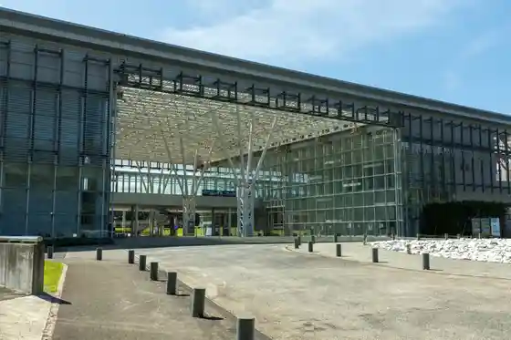
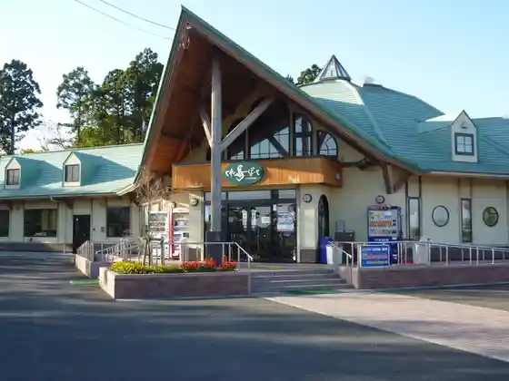
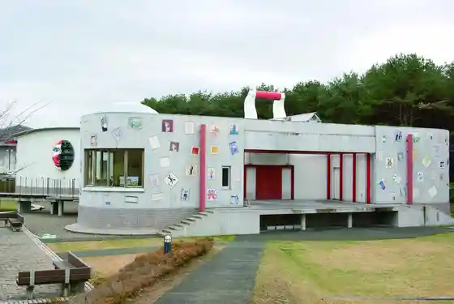

Misawa Airport
Misawa, Aomori · 0176-53-7500 · Official / source link
Aomori Prefectural Misawa Koku Science Museum
Misawa, Aomori · 0176-50-7777 · Official / source link

SkyPlazaMISAWA (Sukai Plaza Misawa)
Misawa, Aomori · 0176-51-1712 · Official / source link
Roadside Station Misawa (Tonan Han Kinen Kanko Village)
Misawa, Aomori · 0176-59-2711 · Official / source link

Misawa Terayamashuji Memorial Museum
Misawa, Aomori · 0176-59-3434 · Official / source link

Ogawara Kohan Campground Ogawara Mizumi Kosui Bath
Misawa, Aomori · 0176-59-2830 · Official / source link
Aomori Ya by Hoshino Resort
Misawa, Aomori · 050-3134-8094 · Official / source link
Anenuma
Misawa, Aomori · 0176-59-2311 · Official / source link
Misawa Senjin Memorial Museum
Misawa, Aomori · 0176-59-3009 · Official / source link
Hotoke Numa
Misawa, Aomori · 0176-53-5111 · Official / source link
Misawa Tourist Information
Misawa, Aomori · 0176-27-0337 · Official / source link
Sabishiro Coast
Misawa, Aomori · 0176-53-5111 · Official / source link
Hosutorekkingu
Misawa, Aomori · 070-2013-7409 · Official / source link
Misawa Folk History Museum
Misawa, Aomori · 0176-59-3670 · Official / source link
Aomoriken Meisui 10 Sen no Yusui (Odauchi Numa)
Misawa, Aomori · 0176-53-5111 · Official / source link